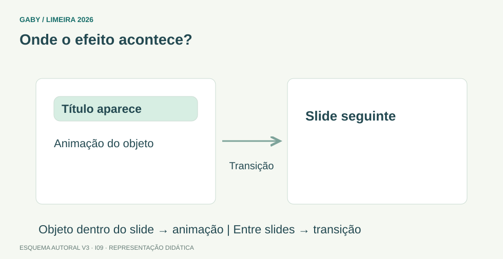

Objetivos do módulo
- Distinguir slide, layout, tema e apresentação.
- Diferenciar animação de transição.
- Entender objetos, anotações, guias e botões de ação.
Onde o efeito acontece?

Descrição em texto do esquema
- Animação: Atua em um objeto do slide.
- Transição: Atua na passagem entre slides.
- Exemplo: Título aparece; depois o slide muda.
Oficina visual · aplique o esquema
Para um título aparecer aos poucos e, depois, passar ao próximo slide com esmaecimento, quais recursos utilizar?
Atividade autoral complementar da V3. Registre sua resposta; a resolução está no arquivo de gabarito e revisão.
Mapa do conteúdo
1. Estrutura
Apresentação é o arquivo completo; slide é cada página/tela. Layout define disposição de espaços reservados; tema padroniza elementos visuais como cores, fontes e efeitos.
2. Objetos e organização
Slides podem conter caixas de texto, imagens, formas, tabelas, gráficos, áudio e vídeo. Alinhar, distribuir, agrupar e ordenar objetos ajuda na composição. Régua e guias auxiliam posicionamento.
3. Transição x animação
Transição ocorre entre slides. Animação afeta objetos dentro de um slide, controlando entrada, ênfase, saída ou trajetória. Essa diferença é clássica em prova.
4. Anotações e apresentação
Anotações do apresentador podem apoiar a fala sem necessariamente aparecer ao público. Modos de exibição ajudam a editar, ordenar slides e apresentar.
5. Botões de ação e links
Botões de ação e hiperlinks podem navegar para outros slides, páginas web ou ações configuradas, úteis em apresentações interativas.
Exemplos resolvidos passo a passo
Exemplo 1
Situação: Quer efeito ao passar do slide 2 para o 3.
Exemplo 2
Situação: Quer fazer um título aparecer depois da imagem no mesmo slide.
Pegadinhas e erros frequentes
- Confundir animação e transição.
- Confundir layout com tema.
- Achar que anotações fazem parte obrigatória do slide projetado.
Resumo de prova
- Slide é parte da apresentação.
- Layout organiza placeholders; tema padroniza visual.
- Transição = entre slides.
- Animação = objetos no slide.
- Guias ajudam no alinhamento.
Exercícios do módulo
Resolva sem consultar o arquivo de gabarito. As questões são autorais e construídas para treinar os conceitos do edital.
- animação de objeto
- filtro
- macro de Excel
- transição
- compactação
- seção do Word
- animação
- transição
- velocidade da internet
- disposição de espaços no slide
- senha
- extensão do arquivo
- padrão visual
- conteúdo textual obrigatório
- fórmulas
- arquivos anexos
- ser sempre projetadas
- substituir slide
- formatar disco
- apoio ao apresentador
- compactar arquivo
- enviar e-mail
- alinhar/posicionar objetos
- calcular juros
- somar células
- navegar para outro slide
- criar partição
- mudar senha do Windows
- conjunto/arquivo de slides
- uma única célula
- pasta do Windows
- mensagem de e-mail
- apagar todos
- transformar em texto puro
- criar macro obrigatória
- tratá-los como conjunto em várias operações
- tema apenas
- guia
- animação
- slide
Quando terminar, abra Informática 09 - PowerPoint - Apresentações, Edição, Animações e Transições - Gabarito e Revisão.
Checklist de domínio
- ☐ Distinguir slide, layout, tema e apresentação.
- ☐ Diferenciar animação de transição.
- ☐ Entender objetos, anotações, guias e botões de ação.
Meta do módulo: 80% ou mais nas questões, sem depender de consulta.
Referências e conteúdos auxiliares
- Microsoft — A diferença entre animações e transiçõesEfeitos aplicados a objetos e efeitos de passagem entre slides.
Referências externas de apoio consultadas para a V3 em 27/09/2026. A origem das questões é o material autoral do projeto; estes links não indicam que uma instituição publicou ou validou os exercícios. As páginas externas precisam de internet. Em informática, confira a versão do programa; em legislação, observe o recorte e as regras de atualização do edital.